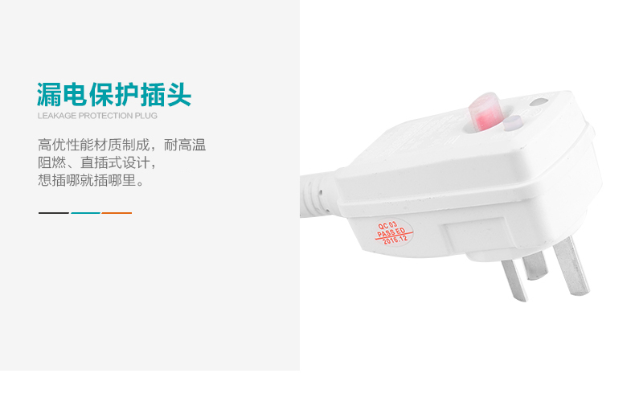
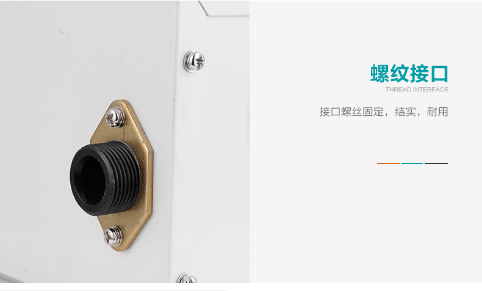

即开即热，无繁琐，只有妙不可言。
回水器一开，就可与你的各种设备配合使用。确保您一打开水龙头就能享受到热水。
产品可实现全天设定时间段内自动恒温运行，感应水流启动，
令简约与技术的融合更胜以往，带来妙处连连。
- 定时模式
- 水流模式
- 除垢模式
- 温度设置
- 运行时间
- 定时设置
- 水泵运行
- 温度显示
- 时间显示
智能热水回水器，化解纷繁。
简单操作一下即可完成设置，然后回水器便自动开启恒温运行。
使用也同样轻轻松松，限时工作，热源热水温度不足时自动停止。
无论是使用你的燃气热水器、电热水器，太阳能热水器、
还是空气能热水器，使用回水器的体验都同样精彩。
龙头一开，热水即来。
家庭里加个回水器有什么用？
大有妙用。
家庭用热水器离用水点较远，每次用水时都要提前将管道内的冷水排空才能享受到热水，
即浪费时间又浪费资源。智能热水回水器（以下简称回水器）解决了这些问题，
确保您一打开水龙头就能享受到热水。
产品可实现全天设定时间段内自动恒温运行，感应水流启动，限时工作，
热源热水温度不足时自动停止。内置循环屏蔽电泵。
- 控制器
回水器的软件和面板更加智能友好，
让你有更好的体验。 - 外壳
采用1.2mm厚优质钢板成形，
表面喷塑处理，钢性和耐候性 - 电泵
采用名牌屏蔽泵，经久耐用；
控制器置于塑料盒中成为一整体，
安全可靠便于维护。
在使用热水前1-2分钟，回水器将热水管道里的冷水循环回热水器；
当准备好衣服进入洗澡间时，热水已充满管道，此时打开龙头即有热水，如同入住五星级酒店，
使用热水不需要等待，节省时间，同时大大提高了热水使用的舒适性；冷水不用排走，还可节省水资源。
细心搭配

纯静呈现
噪音低，回水器运行稳定、使用寿命长，
让你享受热水使用的舒适性
耗电量少，一天平均运行时间为20-30分钟，
总共耗电约为30-50瓦/天
安装灵活。体积小，安装位置选择很灵活，
接管简单、方便。
产品说明
全自动电脑控制出水温度，先进的LCD水温显示，
直观、便捷控制水温。
- 1、定时模式指示灯
- 2、水流模式指示灯
- 3、除垢模式指示灯
- 4、温度设置指示灯
- 5、运行时间设置指示灯
- 6、定时模式设置指示灯
- 7、电机运行指示灯
- 8、温度显示
- 9、时间显示
菜单设置：
1）进入菜单状态：长按[设置键]5s，进入[菜单设置]状态。
2）菜单中切换：在某一设置项状态下，短按[设置键]可切换至下一设置项。每一设置项在表1中详细描述。
3）退出菜单：至末尾设置项[时间修改]状态下，短按[设置键]保存参数并退出，
返回至待机页面；或在任意设置项中短按[确认键1或超过10s未进行操作，
将保存当前所有设置参数并退出[菜单设置]，返回至待机页面。
注：水泵运行时进行的菜单设置，在下次运行时生效。
产品剖解图
产品外形尺寸与安装孔尺寸
智能热水回水器（NWH-9）